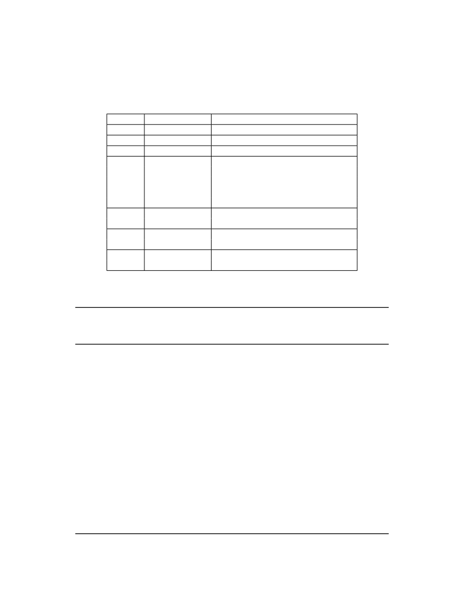

<table border="0" height="1453" width="1123">
<tr><td>
<div style="position:absolute; top:0; left:0;"></div>
<div style="position:absolute;top:74.119;left:132.145;"><nobr>
<span style="font-size:20.022;">38</span>
</nobr></div>
<div style="position:absolute;top:74.119;left:331.141;"><nobr>
<span style="font-size:20.022;font-style:italic;">Volume II: RISC-V Privileged Architectures V20190608-Priv-MSU-Ratified</span>
</nobr></div>
<div style="position:absolute;top:131.778;left:182.201;"><nobr>
<span style="font-size:18.285;font-style:italic;">these need to be distinguished, and if so, whether a given opcode should be treated as illegal or</span>
</nobr></div>
<div style="position:absolute;top:153.720;left:182.201;"><nobr>
<span style="font-size:18.285;font-style:italic;">privileged.</span>
</nobr></div>
<div style="position:absolute;top:187.059;left:132.145;"><nobr>
<span style="font-size:20.022;">If an instruction raises multiple synchronous exceptions, the decreasing priority order of Table</span>
<span style="font-size:20.022;color: #000080;"><a href="#" onClick="javascript:parent.GotoNewPage(49); return false">3.7</a></span>
</nobr></div>
<div style="position:absolute;top:211.928;left:132.145;"><nobr>
<span style="font-size:20.022;">indicates which exception is taken and reported in mcause . The priority of any custom synchronous</span>
</nobr></div>
<div style="position:absolute;top:236.795;left:132.145;"><nobr>
<span style="font-size:20.022;">exceptions is implementation-defined.</span>
</nobr></div>
<div style="position:absolute;top:279.396;left:269.925;"><nobr>
<span style="font-size:20.022;">Priority</span>
</nobr></div>
<div style="position:absolute;top:304.993;left:269.925;"><nobr>
<span style="font-size:20.022;font-style:italic;">Highest</span>
</nobr></div>
<div style="position:absolute;top:632.660;left:269.925;"><nobr>
<span style="font-size:20.022;font-style:italic;">Lowest</span>
</nobr></div>
<div style="position:absolute;top:279.396;left:360.841;"><nobr>
<span style="font-size:20.022;">Exception Code</span>
</nobr></div>
<div style="position:absolute;top:304.993;left:490.150;"><nobr>
<span style="font-size:20.022;">3</span>
</nobr></div>
<div style="position:absolute;top:330.593;left:480.139;"><nobr>
<span style="font-size:20.022;">12</span>
</nobr></div>
<div style="position:absolute;top:356.192;left:490.150;"><nobr>
<span style="font-size:20.022;">1</span>
</nobr></div>
<div style="position:absolute;top:381.790;left:490.150;"><nobr>
<span style="font-size:20.022;">2</span>
</nobr></div>
<div style="position:absolute;top:406.659;left:490.150;"><nobr>
<span style="font-size:20.022;">0</span>
</nobr></div>
<div style="position:absolute;top:431.526;left:435.646;"><nobr>
<span style="font-size:20.022;">8, 9, 11</span>
</nobr></div>
<div style="position:absolute;top:456.393;left:490.150;"><nobr>
<span style="font-size:20.022;">3</span>
</nobr></div>
<div style="position:absolute;top:481.260;left:490.150;"><nobr>
<span style="font-size:20.022;">3</span>
</nobr></div>
<div style="position:absolute;top:506.860;left:490.150;"><nobr>
<span style="font-size:20.022;">6</span>
</nobr></div>
<div style="position:absolute;top:531.727;left:490.150;"><nobr>
<span style="font-size:20.022;">4</span>
</nobr></div>
<div style="position:absolute;top:557.326;left:480.139;"><nobr>
<span style="font-size:20.022;">15</span>
</nobr></div>
<div style="position:absolute;top:582.193;left:480.139;"><nobr>
<span style="font-size:20.022;">13</span>
</nobr></div>
<div style="position:absolute;top:607.793;left:490.150;"><nobr>
<span style="font-size:20.022;">7</span>
</nobr></div>
<div style="position:absolute;top:632.660;left:490.150;"><nobr>
<span style="font-size:20.022;">5</span>
</nobr></div>
<div style="position:absolute;top:279.396;left:522.834;"><nobr>
<span style="font-size:20.022;">Description</span>
</nobr></div>
<div style="position:absolute;top:304.993;left:522.834;"><nobr>
<span style="font-size:20.022;">Instruction address breakpoint</span>
</nobr></div>
<div style="position:absolute;top:330.593;left:522.834;"><nobr>
<span style="font-size:20.022;">Instruction page fault</span>
</nobr></div>
<div style="position:absolute;top:356.192;left:522.834;"><nobr>
<span style="font-size:20.022;">Instruction access fault</span>
</nobr></div>
<div style="position:absolute;top:381.790;left:522.834;"><nobr>
<span style="font-size:20.022;">Illegal instruction</span>
</nobr></div>
<div style="position:absolute;top:406.659;left:522.834;"><nobr>
<span style="font-size:20.022;">Instruction address misaligned</span>
</nobr></div>
<div style="position:absolute;top:431.526;left:522.834;"><nobr>
<span style="font-size:20.022;">Environment call</span>
</nobr></div>
<div style="position:absolute;top:456.393;left:522.834;"><nobr>
<span style="font-size:20.022;">Environment break</span>
</nobr></div>
<div style="position:absolute;top:481.260;left:522.834;"><nobr>
<span style="font-size:20.022;">Load/Store/AMO address breakpoint</span>
</nobr></div>
<div style="position:absolute;top:506.860;left:522.834;"><nobr>
<span style="font-size:20.022;">Store/AMO address misaligned</span>
</nobr></div>
<div style="position:absolute;top:531.727;left:522.834;"><nobr>
<span style="font-size:20.022;">Load address misaligned</span>
</nobr></div>
<div style="position:absolute;top:557.326;left:522.834;"><nobr>
<span style="font-size:20.022;">Store/AMO page fault</span>
</nobr></div>
<div style="position:absolute;top:582.193;left:522.834;"><nobr>
<span style="font-size:20.022;">Load page fault</span>
</nobr></div>
<div style="position:absolute;top:607.793;left:522.834;"><nobr>
<span style="font-size:20.022;">Store/AMO access fault</span>
</nobr></div>
<div style="position:absolute;top:632.660;left:522.834;"><nobr>
<span style="font-size:20.022;">Load access fault</span>
</nobr></div>
<div style="position:absolute;top:696.811;left:252.610;"><nobr>
<span style="font-size:20.022;">Table 3.7: Synchronous exception priority in decreasing priority order.</span>
</nobr></div>
<div style="position:absolute;top:753.863;left:182.201;"><nobr>
<span style="font-size:18.285;font-style:italic;">Instruction address breakpoints have the same cause value as, but different priority than, data</span>
</nobr></div>
<div style="position:absolute;top:775.804;left:182.201;"><nobr>
<span style="font-size:18.285;font-style:italic;">address breakpoints (a.k.a. watchpoints) and environment break exceptions (which are raised by</span>
</nobr></div>
<div style="position:absolute;top:797.746;left:182.201;"><nobr>
<span style="font-size:18.285;font-style:italic;">the EBREAK instruction).</span>
</nobr></div>
<div style="position:absolute;top:842.703;left:182.201;"><nobr>
<span style="font-size:18.285;font-style:italic;">Instruction address misaligned exceptions are raised by control-flow instructions with misaligned</span>
</nobr></div>
<div style="position:absolute;top:864.644;left:182.201;"><nobr>
<span style="font-size:18.285;font-style:italic;">targets, rather than by the act of fetching an instruction. Therefore, these exceptions have lower</span>
</nobr></div>
<div style="position:absolute;top:886.586;left:182.201;"><nobr>
<span style="font-size:18.285;font-style:italic;">priority than other instruction address exceptions.</span>
</nobr></div>
<div style="position:absolute;top:946.694;left:132.145;"><nobr>
<span style="font-size:21.942;font-weight:bold;">3.1.17</span>
</nobr></div>
<div style="position:absolute;top:946.694;left:219.847;"><nobr>
<span style="font-size:21.942;font-weight:bold;">Machine Trap Value (</span>
<span style="font-size:21.942;">mtval</span>
<span style="font-size:21.942;font-weight:bold;">) Register</span>
</nobr></div>
<div style="position:absolute;top:1004.111;left:132.145;"><nobr>
<span style="font-size:20.022;">The mtval register is an MXLEN-bit read-write register formatted as shown in Figure</span>
<span style="font-size:20.022;color: #000080;"><a href="#" onClick="javascript:parent.GotoNewPage(50); return false">3.23</a></span>
<span style="font-size:20.022;">. When a</span>
</nobr></div>
<div style="position:absolute;top:1028.978;left:132.145;"><nobr>
<span style="font-size:20.022;">trap is taken into M-mode, mtval is either set to zero or written with exception-specific information</span>
</nobr></div>
<div style="position:absolute;top:1053.845;left:132.145;"><nobr>
<span style="font-size:20.022;">to assist software in handling the trap. Otherwise, mtval is never written by the implementation,</span>
</nobr></div>
<div style="position:absolute;top:1078.713;left:132.145;"><nobr>
<span style="font-size:20.022;">though it may be explicitly written by software. The hardware platform will specify which excep-</span>
</nobr></div>
<div style="position:absolute;top:1103.579;left:132.145;"><nobr>
<span style="font-size:20.022;">tions must set mtval informatively and which may unconditionally set it to zero.</span>
</nobr></div>
<div style="position:absolute;top:1146.732;left:132.145;"><nobr>
<span style="font-size:20.022;">When a hardware breakpoint is triggered, or an instruction-fetch, load, or store address-misaligned,</span>
</nobr></div>
<div style="position:absolute;top:1171.599;left:132.145;"><nobr>
<span style="font-size:20.022;">access, or page-fault exception occurs, mtval is written with the faulting virtual address. On an</span>
</nobr></div>
<div style="position:absolute;top:1196.469;left:132.145;"><nobr>
<span style="font-size:20.022;">illegal instruction trap, mtval may be written with the first XLEN or ILEN bits of the faulting</span>
</nobr></div>
<div style="position:absolute;top:1221.336;left:132.145;"><nobr>
<span style="font-size:20.022;">instruction as described below. For other traps, mtval is set to zero, but a future standard may</span>
</nobr></div>
<div style="position:absolute;top:1246.203;left:132.145;"><nobr>
<span style="font-size:20.022;">redefine mtval ’s setting for other traps.</span>
</nobr></div>
<div style="position:absolute;top:1300.971;left:182.201;"><nobr>
<span style="font-size:18.285;font-style:italic;">The</span>
<span style="font-size:18.285;">mtval</span>
<span style="font-size:18.285;font-style:italic;">register replaces the</span>
<span style="font-size:18.285;">mbadaddr</span>
<span style="font-size:18.285;font-style:italic;">register in the previous specification. In addition</span>
</nobr></div>
</td></tr>
</table>
